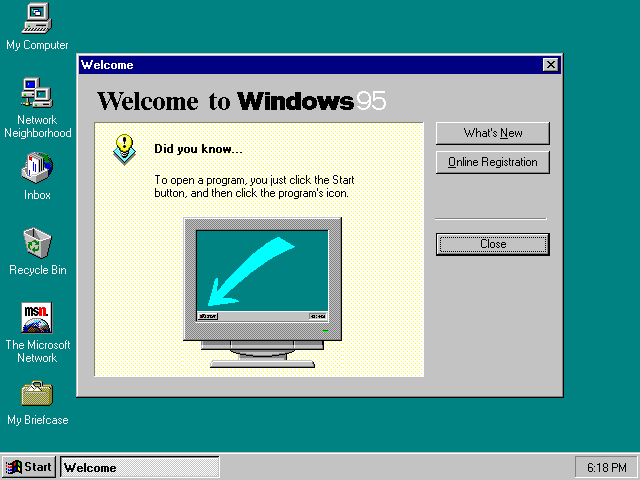
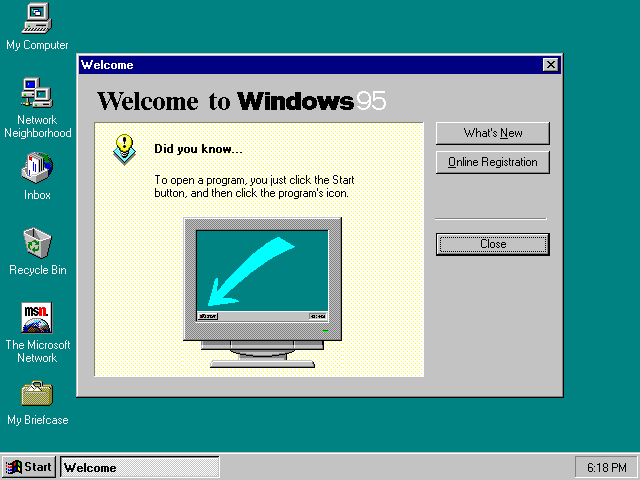

The artist uses themes reminescent of the times before the 2010s by mimicking the styles present in Windows and Mac Systems. The icons on the page like "Silicon Canyon" and "Collection Alias" mimic those found in old Windows systems, along with the toolbar that is also apparently inspired by older looking toolbars on the MACOS systems. If we also look at her color palette choices within the website itself a lot of it is gray which is very much seen in OS Systems like Windows 95. The font she uses is Adobe Dia which she uses throughtout the website on things such as the icon names, love letters which again mimicks the old pixelated font of the computer systens of the 90s and gives an old retro feel to the artwork. Her aesthetic choices that you see throughout the work pay a homage to internet culture and society of the 90s and 00s.
 

sfdssdgsdfgsd